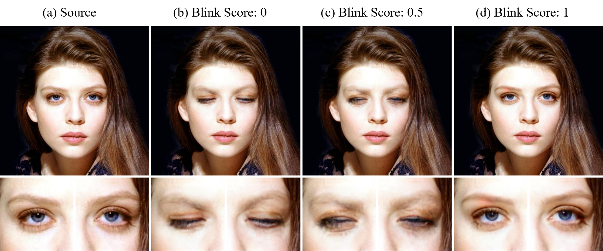
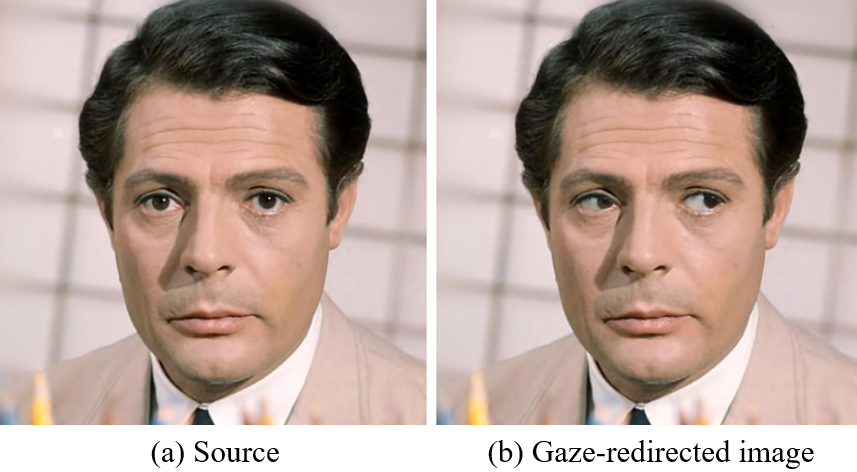
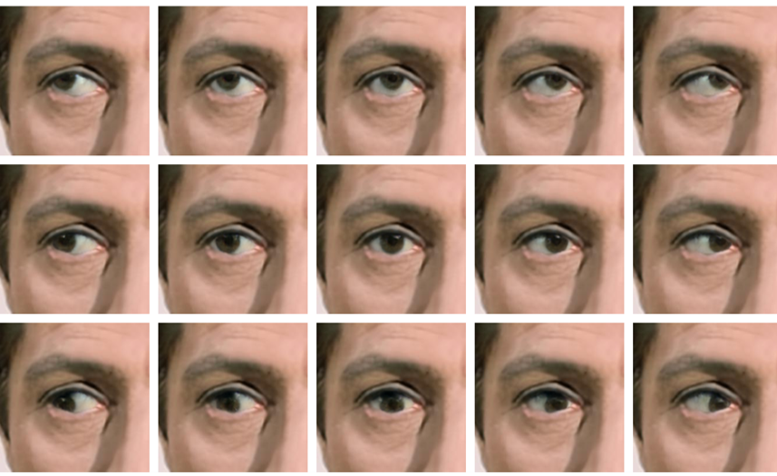
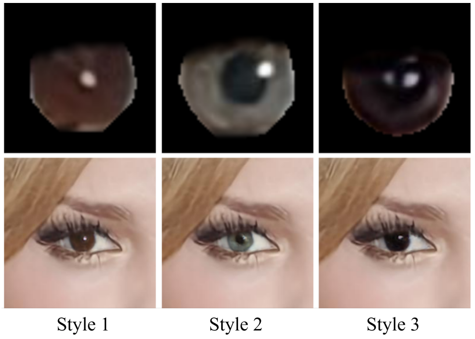
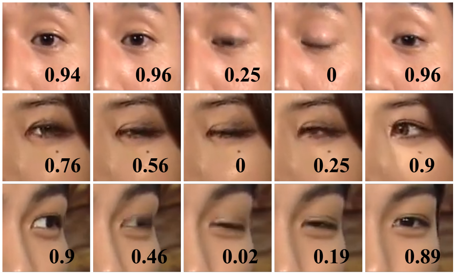
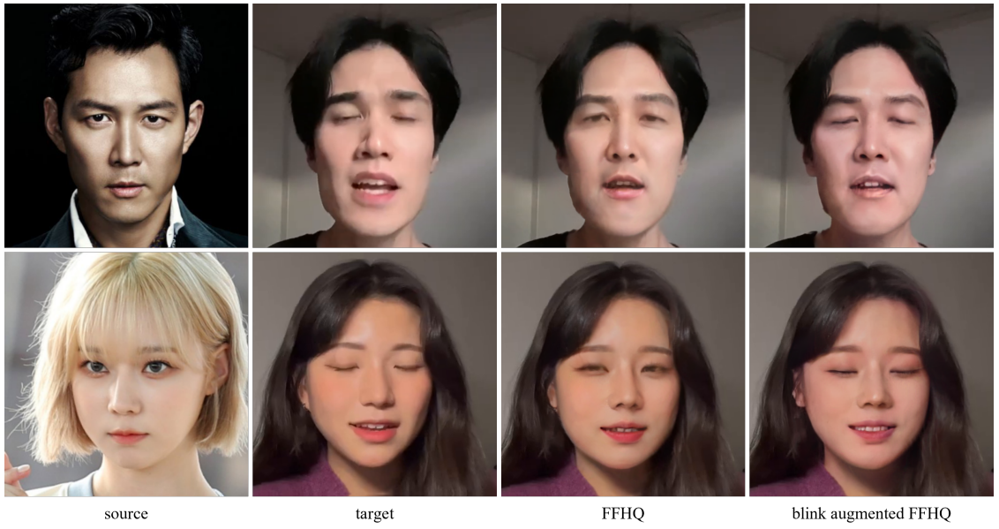

Recent developments in generative models have enabled the generation of photo-realistic human face images, and downstream tasks utilizing face generation technology have advanced accordingly. However, models for downstream tasks are yet substandard at eye control (e.g. blink, gaze redirection). To overcome such eye control problems, we introduce a novel framework consisting of two distinct modules: a blink control module and a gaze redirection module. We also propose a novel data augmentation method to train each module, leveraging style mixing to obtain images with desired features. We show that our framework produces eye-controlled images of high quality, and demonstrate how it can be used to improve the performance of downstream tasks.










BibTex Code Here